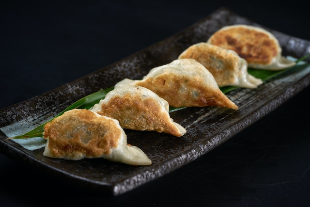

Dumplings

Description
These (mostly) homemade dumplings, or potstickers, are easy to make and taste delicious! They're also a wonderful family project for a rainy afternoon or when souls are in need of comfort food.
Ingredients
For Filling and Wrapping
This recipe makes 35-40 dumplings. Look for pre-made wrappers in Asian food shops (duh!), or the Asian or International aisle of your local supermarket. Often the wrappers are sold frozen or refigerated, so if you can't find them next to the tortillas and papadams, head to the cold section.
- 300 g. minced pork or chicken
- 1/2 tsp. baking soda
- 1 tsp. cornflour (cornstarch)
- 1 1/2 tsp. salt
- 1 tsp. sugar
- 3 tbsp. cold water
- 1 tbsp. shaoxing wine
- 1 tsp. dark soy sauce
- 1 tsp. light soy sauce
- 2 tbsp. sesame oil
- 2 spring (green) onions
- 2 tsp. fresh grated ginger
- 1 clove minced garlic (or use a garlic press)
- dumpling wrappers
For Cooking
Steps
- Combine ingredients down to (and including) the sesame oil until all liquid has been absorbed and the meat binds to itself.
- Add the spring onions, ginger and garlic.
- Add about 1 tbsp of the mixture to the center of a wrapper. Gently fold in half and press along the entire edge to seal.
- When all of the dumplings are assembled, heat oil over medium heat. Add dumplings to the pan, but be careful not to overcrowd it. Fry for about 2 minutes, or until the bottoms are golden brown.
- Add the water and immediately cover the pan. Steam for 6-8 minutes.
Credits
This recipe is from The Dumpling Sisters. I can no longer find the original, but you can visit their blog or buy their cookbook here.